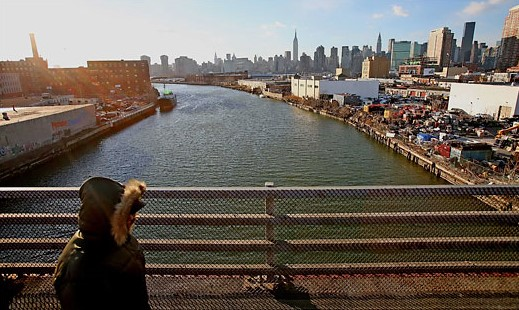
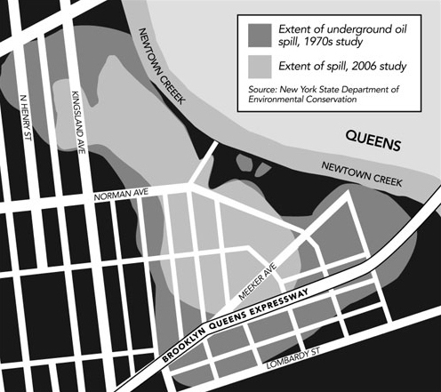

Areas of increased flood and storm risk
As part of its disaster management planning, the City of New York has designated six hurricane evacuation zones to identify areas likely to be inundated by storm surge. In the event of a hurricane or tropical storm, residents in the hurricane zones may be ordered to evacuate.
There are six levels of evacuation zones. Zone 1 has the highest risk and is the most likely to flood.
Use the buttons on the right side of the map to explore the evacuation zones.
Storms and economic inequality
For many New Yorkers, the city's storm vulnerability was made very apparent when Hurricane Sandy hit on October 29, 2012. The storm resulted in 44 deaths, and an estimated $19 billion in damages and economic loses. More than 69,000 residential units were damaged, and thousands of residents were temporarily displaced.
One of the communities that was hardest hit was the Rockaways, the community that sits on a barrier beach off the southeast end of Queens. Even before Sandy, the area suffered from deep income inequalities. A quarter of the Far Rockaway population (and one-third of all children on the peninsula) live below the federal poverty level. Re-development of the area post-Sandy has led to further economic disparities.


Flooding and industrial hazards
Because of the industrial history of NYC's waterfront, there are also many environmental hazards associated with floods and storm surge.
Of particular interest are the six designated Significant Maritime and Industrial Areas (SMIAs). SMIAs are zoned for industrial use, which means facilities in these areas use, store, or transport hazardous or toxic substances at higher concentrations.
Each of the six SMIAs (South Bronx, Newtown Creek, Brooklyn Navy Yard, Red Hook Container Terminal, Sunset Park/Erie Basin, Kill Van Kull, and Staten Island West Shore) are also within the hurricane evacuation zones. As these areas are vulnerable to flooding and storm surge, the risk of accidental or uncontrolled release of toxic substances is heightened, leading to significant environmental pollution and public health hazards.
We'll explore unique vulnerabilities in each of the SMIAs, based on research from New York City Environmental Justice Alliance.

Newtown Creek SMIA
Newtown Creek is known for the Greenpoint Oil Spill, one of the largest oil spills ever recorded in the United States. More than 17 million gallons of petroleum (more than twice the amount of crude oil that spilled from the Exxon Valdez) were leaked into the soil over the course of several decades.

Today, the entirety of Newtown Creek is a federal superfund site. According to the U.S. Environmental Protection Agency, soil in the Newtown Creek area still contains metals, volatile organic compounds, and semi-volatile organic compounds (including polycyclic aromatic hydrocarbons and polychlorinated biphenyls) concentrations above levels in nearby locations in the Atlantic Basin. Additionally, businesses located in the SMIA use industrial solvents containing trichloroethylene, a known carcinogen.